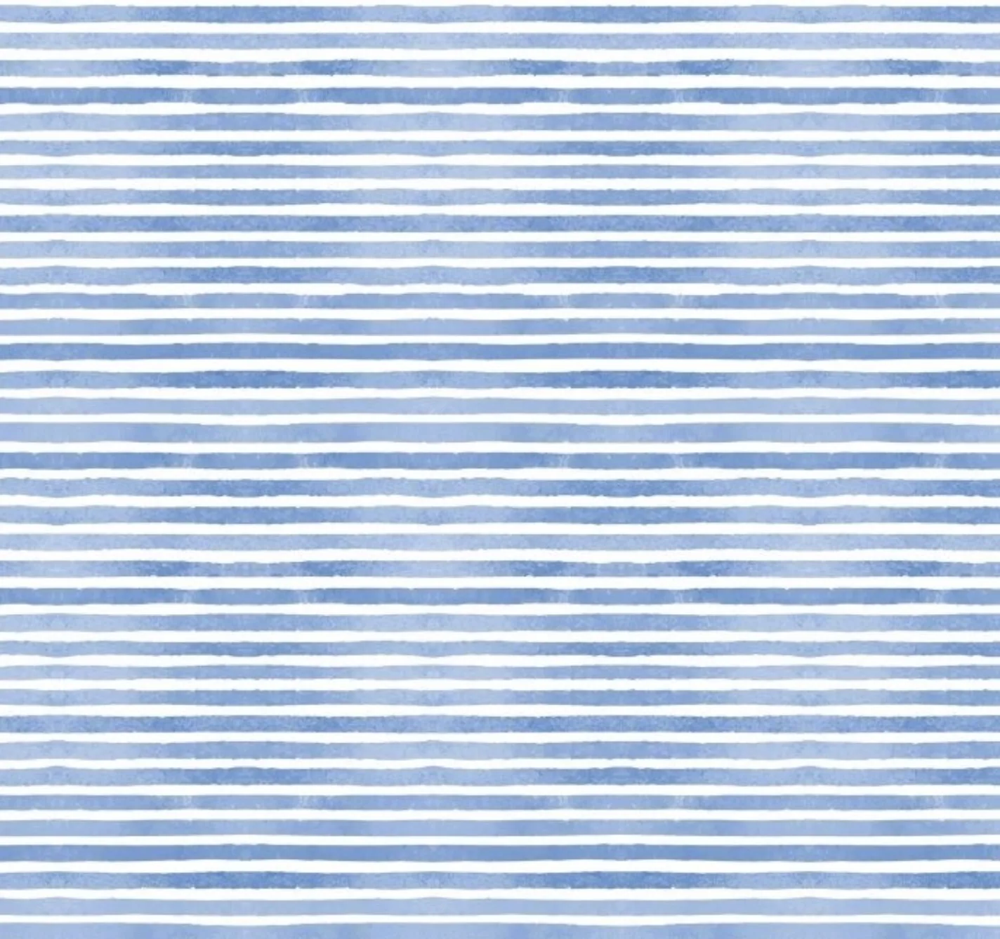

生活就是一场接着一场的冒险

一
梦境开始在教室里，鲁老师正在讲台上滔滔不绝地讲课，而芳超老师则在隔壁教室授课。空气中弥漫着一股紧张的气息，我和yani仿佛预见到了即将发生的事情：一对情侣决绝的跳河了。
下课铃刚一响起，我俩就跑到隔壁教室去找人。教室里一片喧嚣，一个学生正与老师发生激烈争执。
这个同学平日里寡言少语，是个老实人，也是老师们的助手。他平时的压力不仅仅来自于科研，还有老师们给的压力，可能是最近压力过大，现在他的情绪很激动。
他就是跳河的同学，我们谨慎预防着这件事，盯紧了他，看能不能找到机会阻拦让看见的画面成为事实。但是他如同脱缰的野兽般冲出教室。我们呼喊同学帮忙拦截，但根本无济于事。他还是跳河了，后来赶到的女生也随之纵身一跃。
当我们正往河边跑的时候，有个船夫正划着小船过桥，把他俩捞了上来。等我们赶到，眼前的男生已经被实施过急救，有苏醒的迹象了，但是女生，她的的头颅却平整的与脖颈分离。
这个画面很诡异的平静，我们觉得捞上来人就得救了，于是转身走了。
没走多远，回过味来觉得不大对劲，好像得实施一下救援才行。于是我们又跑回到河边，yani抱起她的头，尝试按在脖颈处，但是按不上。索性也不管按没按上了，先开始人工呼吸吧。见状，我就来帮忙进行胸外按压。这个女生咳嗽了几下，把呛的水吐了出来。但我俩琢磨，头一直按不上也不是个办法。
yani就用我手机给她的姑姑打电话，她大姑是位经验丰富的医生，知道该如何处理这种情况。奇怪的是，我的手机无论如何也打不通她大姑的电话。我俩就到处借别的同学的电话，与此同时也在找跳河的男生，男生醒来以后就走了。
好不容易找回来男生以后，他把女生领走了。
水面波光粼粼的，梦境的阴影在水面之下延伸。有些悲剧，哪怕被捞起，也无法真正结束。我在河边跟yani说，要是我，我才不会傻傻的跟着往下跳呢。
二
梦到在一家店里，大家都在找对象，看谁跟谁能够凑成一对。梦瑶她爸爸来店里找她的时候，她正跟一个心仪的男生相谈甚欢。
我大概是这家店的前台服务生，梦瑶是我的室友。我跟她爸爸说梦瑶待会儿就下来，但是他非要去自己找，他就消失在我的视线里了。过了许久，梦瑶来前台找我。
我问她爸爸来是有什么事情吗，她却很惊讶。
我爸来了？
是啊，你爸来找你，我说你一会儿就下来，他直接就进去了，拦也拦不住，你没见到他吗？
我们开始觉得事情有些奇怪，这时候墙面上突然显现了几个字，前三个字比较清晰，后面的字迹难以辨认：
我去了……
我们愣在原地，心跳逐渐加快。眼前的画面使我们陷入了紧张刺激的思考。她爸爸怎么消失了？ 他去了哪里？他经历了什么？
于是我们开始寻找她爸爸。出了店门口，整条街道都是黑暗的，像是与现实世界平行的逆世界。
我们在阴影中徘徊，四处张望，试图捕捉任何可能的线索。突然，前方一栋老房的门口，出现一个模糊的人影。我们走近，认出竟然是梦瑶刚才交谈的那个男生。他的脸色疲惫，眼神中有一种说不出的情绪——仿佛他见过我们无法理解的景象，又仿佛带回了不可言说的秘密。
在这条黑暗的街道上，每一步都像踩在未知的迷雾之上。我们不知道前方等待我们的，是谜底，还是更深层次的梦境。
三
无论是现实还是梦境，无论去哪里，无论经历过什么，我知道我的归途只有一个地方。我永远会回到那个地方，那个自打我有记忆以来最初生活过的小村落。那角落里有着刻画我整体精神面貌的底色，叫做勇敢。生活无非是一场冒险，而我始终在冒险的路上。